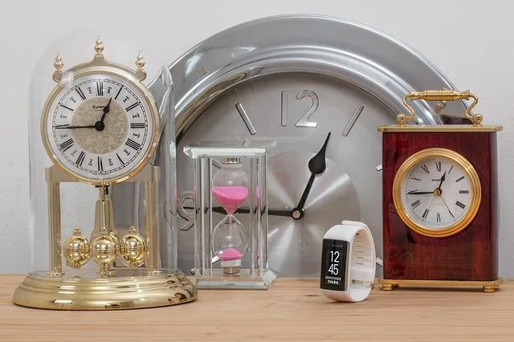

We believe security software like Whonix needs to remain Open Source and independent. Would you help sustain and grow the project? Learn more about our 14 year success story and maybe DONATE!
Network Time Synchronization

A reasonably accurate host clock is required for many general security properties. An inaccurate clock can lead to broken internet connectivity and time related security issues.
Introduction
 Warning: The system clock inside Whonix is set to UTC
to prevent against time zone leaks. This means it may be a few hours
ahead or behind the user's host system clock (timezone). It is strongly recommended not to
change this setting.
Warning: The system clock inside Whonix is set to UTC
to prevent against time zone leaks. This means it may be a few hours
ahead or behind the user's host system clock (timezone). It is strongly recommended not to
change this setting.
Warnings
A reasonably accurate host clock is crucially important. An inaccurate clock can lead to:
- A) Broken internet connectivity, and
- B) Time Attacks.
Therefore, at all times it is recommended to have a host clock with accuracy of up to ± 30 minutes. Clocks that are days, weeks, months or even years slow or fast can lead to many issues such as connectivity problems with Tor, inability to download operating system upgrades and inaccessible websites. [1]
Follow the platform-specific recommendations below to avoid Tor connectivity problems and to limit possible adverse anonymity impacts.
Host Clock
Your computer's host clock must have an accuracy of at least ±30 minutes, ideally better. Otherwise, connectivity can be broken. A minute range of accuracy is more than enough for Whonix. There is no need for seconds accuracy, let alone nanosecond accuracy.
1 Prerequisite knowledge: time formats, 12 hours AM/PM, 24 hours format, timezones. (Common knowledge. Not specific to computers.)
2 Generic task: Check your computer's time and make sure it is reasonably correct.
3 Operating system specific: Select your host operating system.
Linux
1 Host timezone.
The host timezone can stay as is. There is no need at all to change the host timezone for the sake of functional Whonix connectivity.
2 Notice.
This is unspecific to Whonix. This wiki chapter is only about making sure the host clock is reasonably correct. There is no need to specifically follow these steps, unless difficulties are being experienced.
In case of issues, contact the support of your host operating system.
3 Find out the time in UTC.
Any website or device can be used.
4
Show the current system time in UTC using GNU date.
This is useful:
- To find out the current system time of your computer in UTC timezone format.
- To learn the text output format of GNU
date.
date --utc
Sample output:
Fri 05 May 2023 08:10:30 AM UTC5 Fix the clock, if necessary.
Choose either option A) or B).
NOTE: For the following command, use the current time. Adjust the time to the actual time. Do not use the example time used below.
- A) Using any method supported by your host operating system.
- B) Using command line with GNU
date: sudo date --utc --set "Fri 05 May 2023 11:30:50 AM UTC"
6 Update the hardware clock.
sudo hwclock --utc --systohc
(--systohc stands for system to hardware clock.)
7
Show the current system time in UTC using GNU date.
date --utc
8 Compare the system clock with the hardware clock.
Time formats might be different, but the time should be the same or very similar.
sudo date --utc && sudo hwclock --utc
9 Reboot.
Optional.
Reboot and recheck if the clock is correct. Usually it should be. Only in rare cases of broken hardware clocks, the time might be wrong.
10 Done.
The process of correcting the host clock has been completed.
Qubes
Related Qubes upstream bugs:
Instructions:
1 Unspecific to Whonix. Undocumented.
2 Same instructions as under the 'Linux' tab can be used.
3 Use Qubes support.
4 Done.
All Platforms
To protect against time zone leaks, the system clock inside Whonix is set to UTC. This means it may be a few hours before or ahead of your host system clock. Do not change this setting!
If the host clock (in UTC! [2] [3]) is more than 1 hour in the past or more than 3 hours in the future, Tor cannot connect. In this case,
1 Manually fix the host clock by right-clicking on it.
See detailed instructions Host Clock,
2 Check for an empty BIOS (computer motherboard) battery.
3 Power off Whonix-Gateway.
4 Power on Whonix-Gateway.
5 Done.
Tor should be able to reconnect.
Clock Accuracy
A number of things influence clock accuracy inside Whonix VMs.
 Boot Clock Randomization
Boot Clock Randomization- sdwdate:
sdwdate Clock Randomization
- Generally, sdwdate accuracy is limited because it fetches time over Tor from onions.
- Timezone: While not
influencing clock accuracy, this can lead to confusion.
To protect against time zone leaks, the system clock inside Whonix is set to UTC. This means it may be a few hours before or ahead of your host system clock. Do not change this setting!
Easy instructions
1 Platform specific. Select your platform.
2 Background information.
Rationale: The clock will be slow after resume. This can break Tor connectivity.
3 Fix.
How to fix if you did this anyhow? Power off the VMs and restart these. Really power off. Not only Reboot. Then everything will be back to normal.
4 Done.
Advanced instructions
If you are interested in using the pause / suspend / save / hibernate features, please click the expand button for further instructions.
Select your platform.
Non-Qubes-Whonix
- Whonix-Gateway: It is strongly discouraged to pause / suspend / save / hibernate the Whonix-Gateway, because it is difficult to restore the clock after resume. [6] If this advice is ignored, it is easiest to shutdown and restart Whonix-Gateway.
- Whonix-Workstation™: It is strongly discouraged to pause / suspend / save / hibernate the Whonix-Workstation™. If this advice is ignored, restart sdwdate after resume. [7]
Qubes-Whonix
- Whonix-Gateway: It is strongly discouraged to pause
Whonix-Gateway (
sys-whonix) using the pause feature of Qube Manager, because it is difficult to restore the clock after resume. [6] If this advice is ignored, it is easiest to shutdown and restart Whonix-Gateway. - Whonix-Workstation: It is strongly discouraged to pause
Whonix-Workstation (
anon-whonix) using the pause feature of Qube Manager. If this advice is ignored, restart sdwdate after resume. [8] - dom0 suspend / hibernate: It is safe to use the suspend or hibernate feature of dom0 and a manual restart of sdwdate is unnecessary. [9]
Restart sdwdate
To restart sdwdate choose either option A or
B.
- A
graphical user interface (GUI):
Start Menu→Applications→System→Time Synchronization Monitor (sdwdate-gui)→restart sdwdate - B command line interface (CLI): sudo sdwdate-clock-jump
Manually Set Clock Time and Date
Usually not required.
In case sdwdate fails to properly randomize the system clock, it is possible to manually set a random value. This simulates what sdwdate would have done.
The first step should be completed on the host to ensure the host clock is set to the correct time. The next step will be to correct the time inside the virtual machine (VM).
1 Platform specific notice.
- Non-Qubes-Whonix: On the host
- Qubes-Whonix:
dom0
2 Run the following command to report the time in UTC.
date --utc
The output should be similar to the following. [10]
Sep 23 00:00:44 UTC 2026
3 Set the correct time inside the VM
Such as Whonix-Gateway (sys-whonix).
Run the following command with the correct date and time parameters. [11] [12]
clock-random-manual-gui: a randomized clock setting (in UTC) is entered via a GUI.clock-random-manual-cli: a randomized clock setting (in UTC) is entered on the command line. For example [13]:
echo "Sep 23 00:00:44 UTC 2026" | sudo clock-random-manual-cli
4 Restart sdwdate.
sudo service sdwdate restart
5 If Tor is still not functional, try restarting Tor.
Only useful on Whonix-Gateway.
sudo service tor restart
6 Done.
Tor should work once correct clock values are set, but that can be
manually tested with
 systemcheck.
systemcheck.
Block Networking until sdwdate Finishes
Rationale
sdwdate is a Tor-friendly replacement for rdate and ntpdate that sets the system's clock by communicating via end-to-end encrypted TCP with Tor onion webservers. Since timekeeping is crucial for security and anonymity, blocking network access until sdwdate succeeds is sensible. [14]
sdwdate is functional on both Whonix-Gateway and Whonix-Workstation, but in some cases it is possible for the time to leak before it is changed. Potential leak channels include time or other servers, daemons, and client programs such as Tor Browser which are used before sdwdate successfully changes the system clock for the first time after boot. [15] In this case, the user is only left with the protections afforded by Boot Clock Randomization. [16]
Enable
 Warning: This is for testers-only!
Warning: This is for testers-only!
Broken! -> https://forums.whonix.org/t/whonix-firewall-firewall-mode/22855
Note: The following instructions should be applied on Whonix-Gateway and inside Whonix-Workstation.
(Qubes-Whonix: It is the easiest to apply changes in the Whonix-Gateway and Whonix-Workstation Templates since these settings will be inherited by all App Qubes. Alternatively, apply this setting in App Qubes, see footnote. [17])
1 Edit the Whonix firewall configuration.
In both Whonix-Gateway (whonix-gateway-18) and
Whonix-Workstation (whonix-workstation-18), run.
Open file /etc/whonix_firewall.d/50_user.conf in an
editor with administrative ("root") rights.
1 Select your platform.
2 Notes.
- Sudoedit guidance: See
Open File with Root Rights for details on why using
sudoeditimproves security and how to use it. - Editor requirement: Close Featherpad (or the chosen text
editor) before running the
sudoeditcommand.
3 Open the file with root rights.
sudoedit /etc/whonix_firewall.d/50_user.conf
2 Notes.
- Sudoedit guidance: See
Open File with Root Rights for details on why using
sudoeditimproves security and how to use it. - Editor requirement: Close Featherpad (or the chosen text
editor) before running the
sudoeditcommand. - Template requirement: When using Qubes-Whonix, this must be done inside the Template.
3 Open the file with root rights.
sudoedit /etc/whonix_firewall.d/50_user.conf
4 Notes.
- Shut down Template: After applying this change, shut down the Template.
- Restart App Qubes: All App Qubes based on the Template need to be restarted if they were already running.
- Qubes persistence: See also
Qubes Persistence
- General procedure: This is a general procedure required for Qubes and is unspecific to Qubes-Whonix.
2 Notes.
- Example only: This is just an example. Other tools could achieve the same goal.
- Troubleshooting and alternatives: If this example does not work for you, or if you are not using Whonix, please refer to Open File with Root Rights.
3 Open the file with root rights.
sudoedit /etc/whonix_firewall.d/50_user.conf
2 Copy and paste the following text. [18]
firewall_mode="timesync-fail-closed"
3 Save the file and reboot.
4 Have the changes take effect.
- Non-Qubes-Whonix™: restart Whonix-Gateway and Whonix-Workstation.
- Qubes-Whonix: shutdown the Whonix-Gateway
(
whonix-gateway-18) and Whonix-Workstation (whonix-workstation-18) Templates and restart the App Qube (sys-whonixandanon-whonix).
NTP
Disabling NTP
If ISP tampering with NTP is ever confirmed, users are advised to disable NTP and manually update the host clock out-of-band. For example, a watch or atomic clock can be used for this purpose. If the tampering is targeted and not a widescale attack, then the user already has much bigger problems to worry about than NTP; see Confirmation Attacks.
If following the advice above -- disabling NTP on the host and adjusting the clock out-of-band -- be aware that clearnet traffic might be easier to fingerprint. [19] The reason is that it introduces a device issuing clearnet traffic (such as OS updates), but without the use of NTP. It is unknown how many people have NTP which is deactivated, broken, uninstalled, or never in fact installed in the first place. Also unknown is how many people are using alternative time synchronization methods such as authenticated NTP, tails_htp, tlsdate, sdwdate or similar. However, search engine research suggests that very few people fall into both these categories.
NTP Issues
The host system clock synchronization mechanism still uses unauthenticated NTP from a single source. This is not optimal, but there is no real solution to this problem. [20] A potential attack vector is created by this NTP behavior; the ISP and/or time server could either inadvertently or maliciously introduce a significant clock skew, or the host clock could simply malfunction.
If the host clock value is grossly inaccurate -- more than one hour
in the past or more than 3 hours in future -- Tor cannot connect to the
Tor network. [21] This is easily solved by manually
fixing the clock on the host, then powering the Whonix-Gateway
(sys-whonix) off and on again.
Another side effect of a significantly inaccurate host clock concerns operating system (OS) updates and cryptographic verification on the host. Until the host clock is manually fixed, it may no longer be possible to download updates or verify SSL certificates correctly with the host browser.
Users should always check whether a host clock defect relates to an empty battery before assuming the ISP is tampering with NTP.
Spoof the Initial Virtual Hardware Clock Offset
 Tip: Spoofing the initial virtual hardware clock offset
is useful to prevent Clock Correlation Attacks.
Tip: Spoofing the initial virtual hardware clock offset
is useful to prevent Clock Correlation Attacks.
KVM
For KVM, click on Expand on the right.
Edit the VM xml before import or edit the VM xml after import and change the following setting. <clock offset='utc'> To.
<clock offset='variable' adjustment='123456' basis='utc'>
The adjustment attribute takes any arbitrary value for
seconds. The user must pick a random value that is unknown to others,
ranging between 0 and 900 (a 15 minute range).
Qubes
TODO
Unfortunately, it is not yet possible to set a random clock offset for Qubes-Whonix VMs to prevent clock correlation attacks since it is unsupported by Xen. A related issue is denying Qubes-Whonix access to "clocksource=xen", which may not be possible without Linux kernel and/or Xen patches. For a detailed discussion of these issues, see here.
VirtualBox
For VirtualBox, click on Expand on the right.
VirtualBox has a feature to spoof the initial virtual hardware clock offset by setting the clock X milliseconds in the future or past. The syntax is outlined below.
VBoxManage modifyvm <name> --biossystemtimeoffset -<milliseconds> VBoxManage modifyvm <name> --biossystemtimeoffset +<milliseconds>
It is recommended to add a random delay within the following range.
VBoxManage modifyvm <name> --biossystemtimeoffset -60000 VBoxManage modifyvm <name> --biossystemtimeoffset +60000
A spoofing example is below. Users should select their own unique and random values for both the past (-) and future (+) within the specified range. Different values should be used for each distinct VM (on the host).
VBoxManage modifyvm "Whonix-Gateway" --biossystemtimeoffset -35017 VBoxManage modifyvm "Whonix-Gateway" --biossystemtimeoffset +27931
VBoxManage modifyvm "Whonix-Workstation" --biossystemtimeoffset -35017 VBoxManage modifyvm "Whonix-Workstation" --biossystemtimeoffset +27931
Apart from this small biossystemtimeoffset, a clock skew
always degrades privacy. [22] [23]
[24]
Summary
Platform |
Recommendations |
|---|---|
All Platforms |
|
Non-Qubes-Whonix |
|
Qubes-Whonix |
|
Appendix
Deactivate Automatic TimeSync
 Warning: This action is recommended against and is
usually not required. In all cases, first check with the Whonix
developers.
Warning: This action is recommended against and is
usually not required. In all cases, first check with the Whonix
developers.
To deactivate sdwdate, run.
sudo service sdwdate stop
sudo systemctl mask sdwdate
Footnotes
- ↑ Due to invalid (not yet or no longer valid) TLS certificates.
- ↑ To view the system time in UTC on Linux platforms, run: date --utc
- ↑ TODO: Show desktop clock in local time; keep system in UTC
- ↑ VirtualBox does not provide notifications to VMs upon resume.
- ↑ This is because dom0 will notify VMs upon resume. This will result in sdwdate restarting and fixing the clock.
- ↑ 1 2 This is because the clock will be incorrect after system resume. A correct clock is important for anonymity (see Dev/TimeSync to learn more). When a user suspends or saves the VM state, the clock will stop and continue after resuming, leading to a time that lags behind the correct value. This can cause later Tor connectivity problems or introduce possible adverse anonymity impacts. The Whonix-Gateway state should not be suspended or saved. It is far better to power it off when it is no longer needed. If this advice is ignored, Tor can become confused if the time is more than 1 hour in the past or more than 3 hours in the future. When this happens, Tor will only reconnect to the Tor network if the clock is manually fixed or powered off and on again.
- ↑ Similarly, if users suspend or save the
Whonix-Workstation state, the clock will again lag behind the correct
value. This can be manually fixed by running:
Start Menu→Applications→System→Time Synchronization Monitor (sdwdate-gui)→restart sdwdate. - ↑ Qubes does not dispatch the
/etc/qubes/suspend-post.d//etc/qubes/suspend-pre.dhooks upon pause / resume using Qube Manager. - ↑ https://github.com/QubesOS/qubes-issues/issues/1764
- ↑ Mon Apr 22 04:30:44 UTC 2026
- ↑ A non-zero exit codes signifies an error, while
0means it succeeded. - ↑ Also see: man clock-random-manual-gui man clock-random-manual-cli
- ↑ echo "Sat Oct 26 07:18:25 UTC 2026" | /usr/bin/clock-random-manual-cli
- ↑ https://forums.whonix.org/t/testers-wanted-blocking-networking-until-sdwdate-finished-status-of-sdwdate-gui/5372
- ↑ https://phabricator.whonix.org/T533
- ↑ Dev/TimeSync#Block_Networking_until_sdwdate_Finishes
- ↑
 Qubes-Whonix only.
Qubes-Whonix only.The procedure can optionally be completed in select App Qubes like
sys-whonixandanon-whonix.1 Edit the Whonix firewall configuration. In the chosen Whonix App Qube, run. Open file
/usr/local/etc/whonix_firewall.d/*.confin an editor with administrative ("root") rights.1 Select your platform.
 2 Notes. * Sudoedit guidance: See
Open File with Root Rights for details on why using
2 Notes. * Sudoedit guidance: See
Open File with Root Rights for details on why using
sudoeditimproves security and how to use it. * Editor requirement: Close Featherpad (or the chosen text editor) before running thesudoeditcommand. 3 Open the file with root rights. sudoedit /usr/local/etc/whonix_firewall.d/*.conf 2 Notes. * Sudoedit guidance: See
Open File with Root Rights for details on why using
2 Notes. * Sudoedit guidance: See
Open File with Root Rights for details on why using
sudoeditimproves security and how to use it. * Editor requirement: Close Featherpad (or the chosen text editor) before running thesudoeditcommand. * Template requirement: When using Qubes-Whonix, this must be done inside the Template. 3 Open the file with root rights. sudoedit /usr/local/etc/whonix_firewall.d/*.conf 4 Notes. * Shut down Template: After applying this change, shut down the Template. * Restart App Qubes: All App Qubes based on the Template need to be restarted if they were already running. * Qubes persistence: See also
Qubes Persistence * General procedure: This is a general
procedure required for Qubes and is unspecific to Qubes-Whonix. 2 Notes. * Example only: This is just an example. Other tools could achieve the same goal. * Troubleshooting and alternatives: If this example does not work for you, or if you are not using Whonix, please refer to Open File with Root Rights. 3 Open the file with root rights. sudoedit /usr/local/etc/whonix_firewall.d/*.conf
2 Notes. * Example only: This is just an example. Other tools could achieve the same goal. * Troubleshooting and alternatives: If this example does not work for you, or if you are not using Whonix, please refer to Open File with Root Rights. 3 Open the file with root rights. sudoedit /usr/local/etc/whonix_firewall.d/*.conf2 Copy and paste the following text. firewall_mode="timesync-fail-closed" 3 Save the file and reboot.
- ↑ Forum discussion: https://forums.whonix.org/t/did-i-find-an-error-in-qubes-whonix-manual-or-it-is-the-correct-info/21927
- ↑ See the Fingerprint page to discover what fingerprinting means in this case.
- ↑ See Design: Dev/TimeSync.
- ↑ In this case, Tor cannot verify the Tor consensus.
- ↑
biossystemtimeoffsetis used to unlink the virtualizer's initial clock synchronization of the VM from the host clock. - ↑ After powering on a VM, it initially synchronizes the VM clock with the host clock until Whonix Timesync adjusts it.
- ↑ Clock skews can lead to linkability, meaning the user would be pseudonymous rather than anonymous.
Categories: Documentation